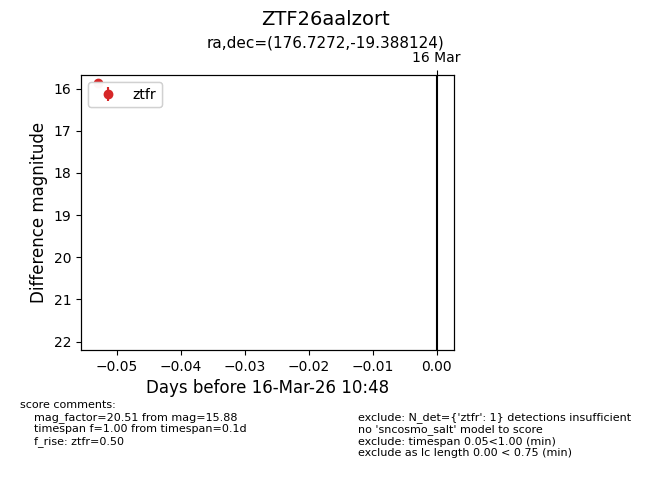
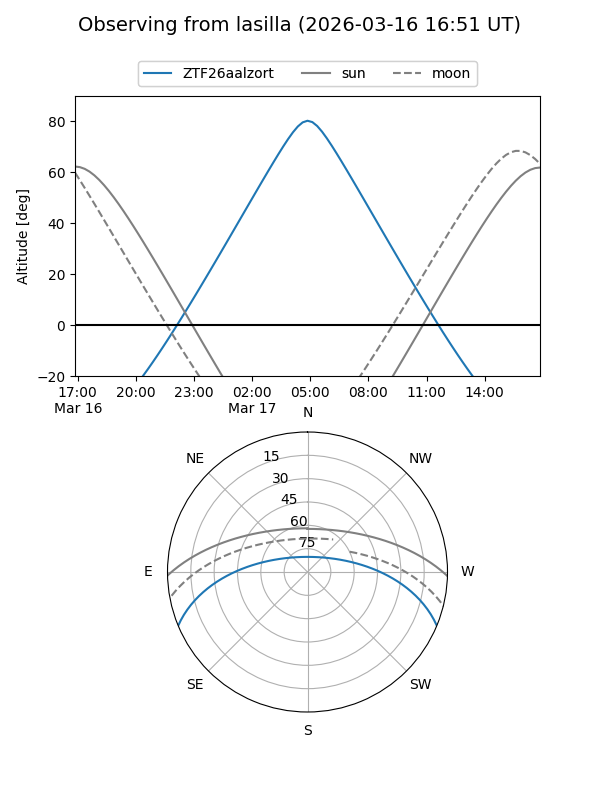
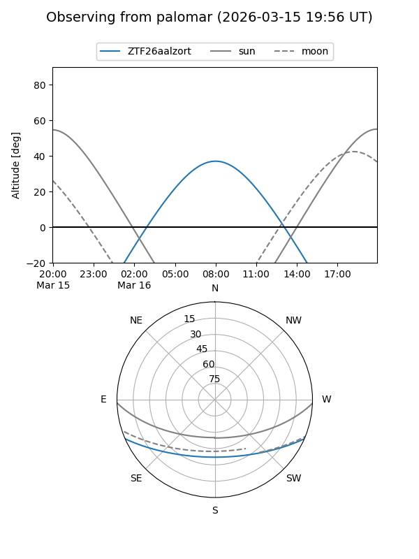

ZTF26aalzort
Target ZTF26aalzort at 2026-03-16 10:50
Aliases and brokers:
FINK: link
Lasair: link
ALeRCE: link
alt names
ZTF26aalzort (ztf,fink_ztf)
Coordinates:
equatorial (ra, dec) = 176.7272,-19.38812
equatorial (HMS+DMS) = 11:46:54.52,-19:23:17.25
galactic (l, b) = (282.6342,+40.92641)
Flags:
Photometry:
last ztfr=15.88
1 ztfr detections
Lightcurve

Visibility


Additional plots